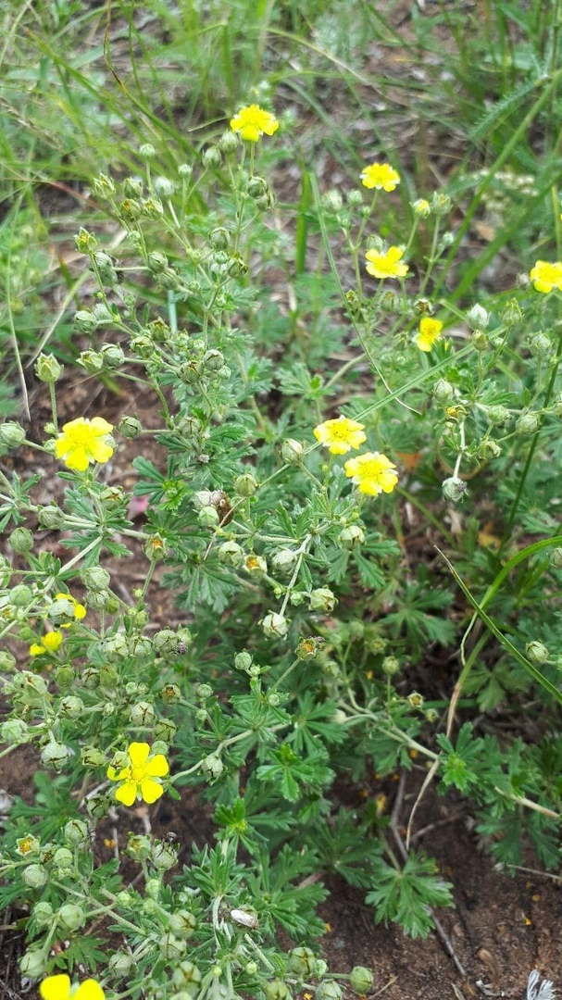
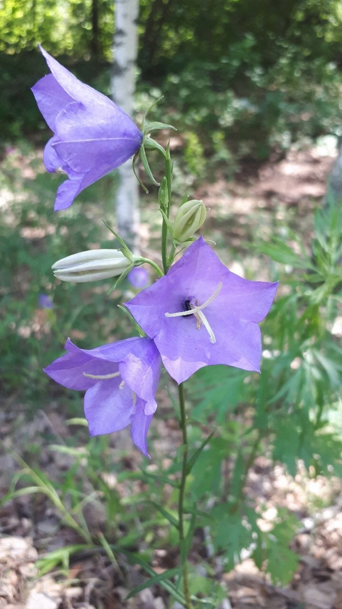
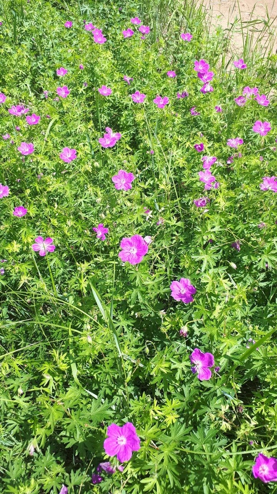
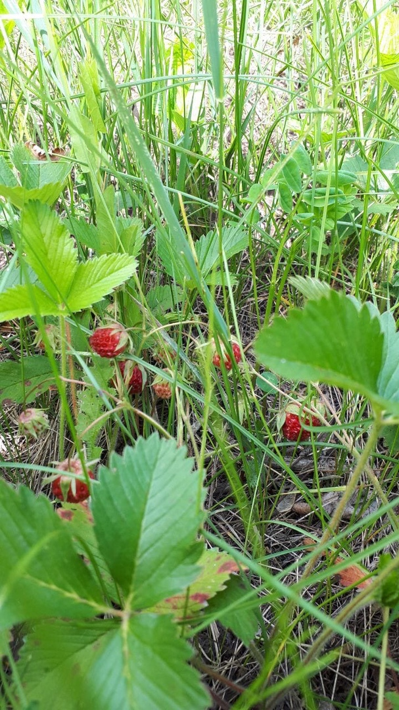

Лапчатка распростертая (лат. Potentilla hippiana) — один из крупнейших по числу видов род растений из семейства Розовые (Rosaceae). Один из крупнейших родов семейства розовых, в зависимости от таксономической концепции, насчитывающий от 300 до 500 видов, что делает его одним из самых богатых родов растений своего семейства. Представители рода распространены большей частью в умеренных и субтропических областях северного полушария, присутствуют во всех районах российского Дальнего Востока, от Северного Ледовитого океана до Корейского полуострова, как на материке, так и на островных территориях. Наиболее характерные представители: лапчатка гусиная и лапчатка прямостоячая (калган-трава).

Травянистый кистекорневой многолетник с восходящим древеснеющим корневищем. Стеблей обычно 2–3; они несколько угловатые, прямые или у основания дуговидные, в нижней части изредка покрыты волосками. Листья серовато-зеленые, жестковатые; прикорневые – длинночерешковые с яйцевидно-ланцетной пластинкой к основанию длинно клиновидно суженной; верхние листья – сидячие, линейные. Все листья городчатые или тупопильчатые, голые и лишь у основания черешков с редкими ресничками. Соцветие метельчатое, из 3–4 цветков, иногда редуцированных до одного верхушечного. Трубка чашечки 4–7 мм длиной; зубцы чашечки плоские, линейно-ланцетные, 7–9 мм длиной. Венчик воронковидный, фиолетовый; трубка его 7 мм длиной, лопасти яйцевидные, около 10 мм длиной. Коробочка продолговатая, с 10 жилками.

Многолетнее травянистое растение из семейства гераниевых (Geraniaceae) с косым корневищем, несколькими стеблями высотой 20 — 80 см., ветвящимися в верхней части, и многочисленными прикорневыми длинночерешковыми листьями, почковидно-округлыми в очертании, глубоко разделенными на 7 ромбически-яйцевидных, перисто-надрезанных долей. Цветки крупные, 3,5 — 4 см. в диаметре, с пятью зелеными чашелистиками, пятью сине-фиолетовыми лепестками, десятью тычинками, одним пестиком с пятигнездной верхней завязью. Расположены попарно на длинных цветоносах, образуя в совокупности крупные зонтиковидные соцветия. Плоды сухие, дробные, распадаются на односемянные части, снабженные остевидными дугообразными придатками. Цветет в июне — августе, плоды созревают в июле — сентябре.

Многолетнее травянистое растение с ползучим корневищем и тройчатыми длинночерешковыми листьями. Обладает многими полезными свойствами, в том числе лечебными (противовоспалительным, легким послабляющим, вяжущим, ранозаживляющим, кровоостанавливающим, мочегонным и др.) и высокими лечебно-диетическими качествами. Хорошо известное витаминоносное растение, особенно плоды, имеющие прекрасные вкусовые качества. Наибольшую ценность для научной медицины представляют плоды земляники зеленой как общеукрепляющего средства – источника аскорбиновой кислоты.